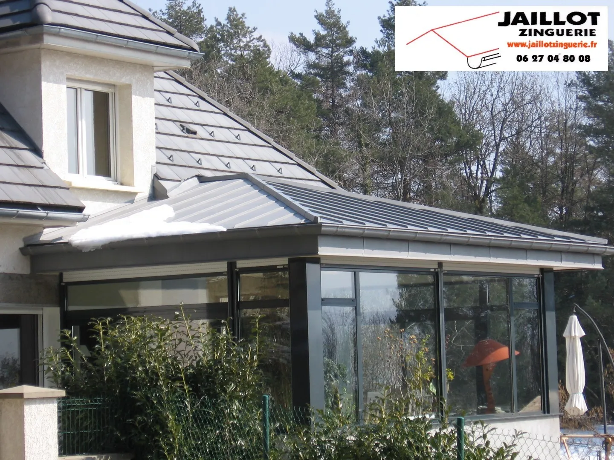

Accueil / Couverture
La couverture
Ardoise, tuiles, zinc ou acier : le bon toit pour votre maison, posé dans les règles.


Le métier
Toutes les techniques
Ardoise en noue ronde, arêtier ou renvers, tuiles plates type Bourgogne et Alsace, tuiles canales, couvertures métalliques à joint debout ou à tasseaux.
- Ardoise : noue ronde, arêtier, renvers.
- Tuiles plates (Bourgogne, Alsace) et canales.
- Métal : joint debout en zinc, cuivre, inox ; à tasseaux.
- Bacs acier en tôles laquées.
Service +
Entretien et Velux
Entretien de toiture, traitement et démoussage, pose de fenêtres de toit Velux.

Questions fréquentes
On vous répond
Faites-vous l’entretien des toitures ?
Oui : entretien de toiture, traitement et démoussage.
Posez-vous des fenêtres de toit ?
Oui, la pose de Velux fait partie du service.
Neuf ou rénovation ?
Les deux : Laurent Jaillot est à votre disposition pour vos travaux de rénovation comme pour vos projets de construction.
Comment vous présenter mon projet ?
Appelez le 06 27 04 80 08 ou le 04 74 24 34 93, ou décrivez votre projet et son lieu dans le formulaire de contact.
Rénovation ou construction · Condeissiat, la Dombes, Bourg-en-Bresse